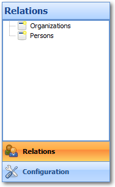
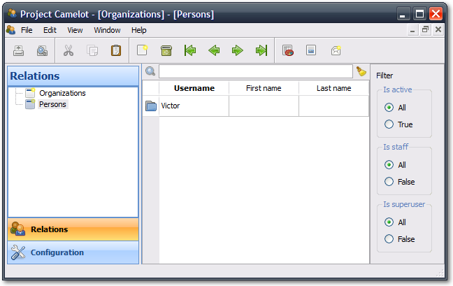
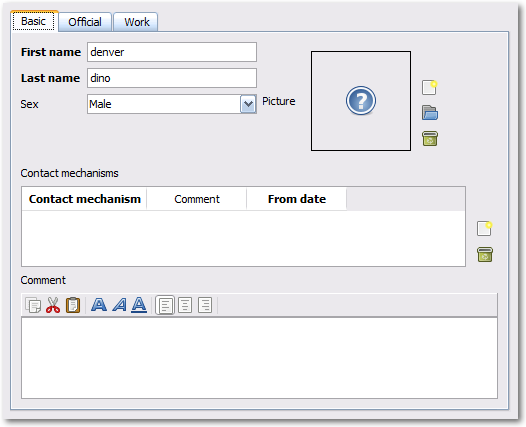
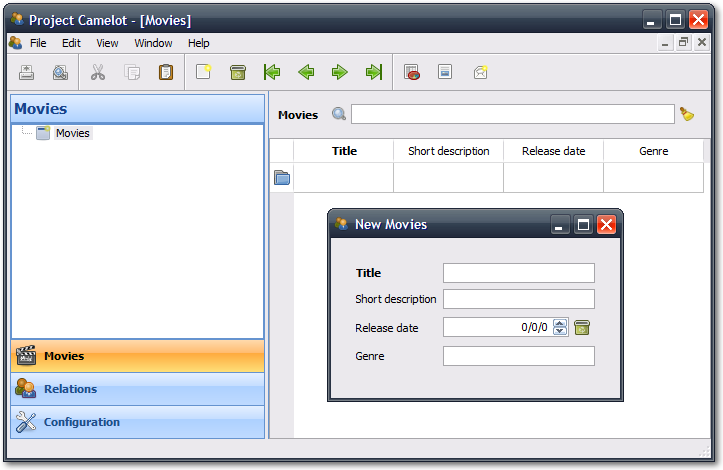
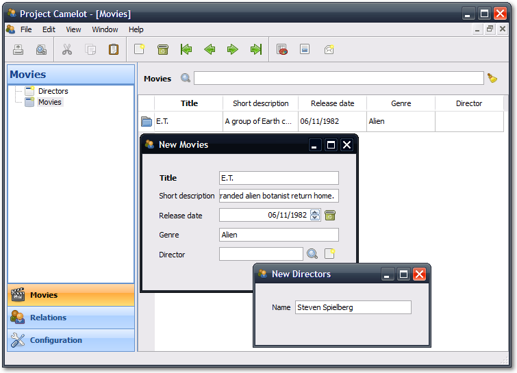

We begin with the creation of a new project. Typing the following command in your command prompt creates one:
PTC\camelot\bin\camelot-admin.py startproject videostore
Under linux, you may have to adjust the folder separator. This tutorial has been written under the Windows XP operating system. The pictures also reflect that operating system.
PTC is the path to Camelot main directory. If Camelot is correctly installed and working, the folder videostore appears in your current working directory. We will be working with the files inside this folder.
The previous command created some modules for us. Let's focus on the module named main.py for a moment. It contains the entry point of your Camelot application, which you start with:
python videostore\main.py
You should get the picture we display below:
The application has menus, a toolbar, a left navigation pane, and a central area on which nothing is currently displayed.
The navigation pane has its first button selected. Select any other button by clicking on it, and see the nagivation tree fills itself with new entries. These are entities, and we will talk about them later (Generally speaking, an entity represents a single table in a database.)

Short disgression on sections: Camelot uses sections to group models. Each button in the navigation pane represents a section, and each entry of the navigation tree is part of this section.
Notice that the application disables most of the menus and the toolbar buttons. When we click on an entity, more options become available. So let's click on the entity named Persons in the section relations. A child window appears in the previously empty area and is maximized by default: this is the table view of the entity named Persons.

Each row is a record with some fields that we can edit (other fields may not be editable). Let's now add a new row by clicking on the new document icon (next to the trash bin icon -- which removes a row).
We now see a form view with additional fields. Forms are not maximized by default. Forms label required fields in bold.

Fill in a first and a last name, and close the form. Camelot will automatically validate and echo the changes to the database. We can reopen the form by clicking on the blue icon in the first column of each row of the table.

That's all for basic usages of the interface.
Next we will create our videostore model. Let's first take a look at the module settings.py. There is an attribute, ENGINE, an anonymous function, which returns a URI, a uniform resource identifier. That's the database your Camelot application will be connecting too. Camelot provides a default sqlite URI scheme. But you can set your own.
If you set a sqlite database file that does not exist, for example, it will be created in the directory from which the application is launched.
Now we can look at model.py. Camelot has already imported some classes for us. They are used to create our entities. Let's say we want a movie entity with a title, a short description, a release date, and a genre.
The small aforementioned specification translates into the following Python code, that we add to our model.py module:
class Movie(Entity):
using_options(tablename='movie')
title = Field(Unicode(60), required=True)
short_description = Field(Unicode(512))
release_date = Field(Date)
genre = Field(Unicode(15))
Movie inherits Elixir's Entity baseclass. We use using_options() to name the table ourselves. Elixir would have used our module path to generate a name in the form package_model_entity, as described on this page.
Our entity holds four fields. title holds up to 60 unicode characters, and is required:
title = Field(Unicode(60), required=True)
short_description can hold up to 512 characters:
short_description = Field(Unicode(512))
release_date holds a date, and genre up to 15 unicode characters:
release_date = Field(Date)
genre = Field(Unicode(15))
For more information about defining fields, visit this page.
The different SQLAlchemy types used by Elixir are described here.
Finally, Camelot fields are documented here.
Let's now create an EntityAdmin subclass.
We have to tell Camelot about our entities, so they show up in the GUI. This is one of the purposes of EntityAdmin subclasses. After adding the EntityAdmin subclass, our Movie class now looks like this:
class Movie(Entity):
using_options(tablename='movie')
title = Field(Unicode(60), required=True)
short_description = Field(Unicode(512))
release_date = Field(Date)
genre = Field(Unicode(15))
class Admin(EntityAdmin):
name = 'Movies'
section = 'movies'
list_display = ['title', 'short_description', 'release_date', 'genre']
def __repr__(self):
return self.title or 'untitled movie'
We made Admin an inner class to emphasize the link between it and the Entity subclass. Camelot does not force us though.
Admin holds three attributes. The value of name will be a label in navigation trees, while section's value is used programmatically to group entities together (we will see that soon). In our case, our group/section is 'movies'.
The last attribute is interesting; it holds a list containing the fields we have defined above. As the name suggests, list_display tells Camelot to show the fields in the list and ignore any others fields it finds. list_display does not affect forms though.
In our case we want to display four fields: title, short_description, release_date, and genre (well, all of them.)
Lastly, we add a __repr__() method that will return either the title of the movie entity or 'untitled movie' if title is empty.
Let's move onto the last piece of the puzzle.
We are now working in the module application_admin.py. Remember the buttons in the navigation pane? We said they were sections, used to group entities. One of the tasks of the module application_admin.py is to specify sections.
Camelot defines a class, MyApplicationAdmin, for us. This class is a subclass of ApplicationAdmin, which is used to control the overall look and feel of every Camelot application.
MyApplicationAdmin.__init__() calls its parent ApplicationAdmin.__init__() and passes it a list of sections using the following syntax:
(<section_internal_name>, (<section_label>, <section_icon_image>))
That means initializing ApplicationAdmin with
[('relations', ('Relations', icon_relations)),
('configuration', ('Configurations', icon_config))]
will display two buttons in the navigation pane, labelled 'Relations' and 'Configurations', with the specified icon next to each label. And yes, the order matters.
Short disgression on the class Icon: Icon manages paths to icon resources; it knows where to search icons using the attribute CAMELOT_ART_DIRECTORY in the module settings.py.
Next, follows four calls to ApplicationAdmin.register(). As you have probably guessed, this method registers Entities and their corresponding EntityAdmins.
We need to add a new section for our Movie entity and then register it. Camelot comes with the Tango icon collection; we use a suitable icon for our movie section. The call to super() in __init__() looks like this after the changes:
icon_movies = Icon('tango/24x24/categories/applications-multimedia.png').fullpath()
icon_relations = Icon('tango/24x24/apps/system-users.png').fullpath()
icon_config = Icon('tango/24x24/categories/preferences-system.png').fullpath()
super(MyApplicationAdmin, self).__init__([
('movies', ('Movies', icon_movies)),
('relations', ('Relations', icon_relations)),
('configuration', ('Configuration', icon_config)),
])
We now register our entity by adding this code at the very end of __init__():
from model import Movie
self.register(Movie, Movie.Admin)
The whole __init__() now looks like this:
def __init__(self):
icon_movies = Icon('tango/24x24/categories/applications-multimedia.png').fullpath()
icon_relations = Icon('tango/24x24/apps/system-users.png').fullpath()
icon_config = Icon('tango/24x24/categories/preferences-system.png').fullpath()
super(MyApplicationAdmin, self).__init__([
('movies', ('Movies', icon_movies)),
('relations', ('Relations', icon_relations)),
('configuration', ('Configuration', icon_config)),
])
from camelot.model.memento import Memento
from camelot.model.authentication import Person, Organization
from camelot.model.i18n import Translation
self.register(Memento, Memento.Admin)
self.register(Person, Person.Admin)
self.register(Organization, Organization.Admin)
self.register(Translation, Translation.Admin)
from model import Movie
self.register(Movie, Movie.Admin)
We are all set. If we run our application,
python videostore/main.py
we see a new button the navigation pane labelled 'Movies'. Clicking on it fills the navigation tree with the only entity in the movies's section. Clicking on this tree entry opens a tabular view of records. And if we click on the blue folder of each record, a form appears.
See our movie database in action:

That's it for the basics of defining an entity and setting it for display in Camelot. Next we look at relationships between entities.
We will be using Elixir's special fields ManyToOne and OneToMany to specify relationships between entities. But first we need a Director entity to play with. We define it as follows:
class Director(Entity):
using_options(tablename='director')
name = Field(Unicode(60))
movies = OneToMany('Movie')
Once again, we name the table ourselves. The novelty here is OneToMany.
In Elixir, OneToMany is a relationship; it takes as parameter the related class's name. Behind the scenes, Elixir creates a director id column in the table represented by the entity Movie and set a foreign key constraint on this column.
Elixir requires that we add an inverse relationship ManyToOne to our now familiar Movie entity. It ends up looking as follows:
class Movie(Entity):
using_options(tablename='movie')
title = Field(Unicode(60), required=True)
short_description = Field(Unicode(512))
release_date = Field(Date)
genre = Field(Unicode(15))
director = ManyToOne('Director')
class Admin(EntityAdmin):
name = 'Movies'
section = 'movies'
list_display = ['title',
'short_description',
'release_date',
'genre',
'director']
def __repr__(self):
return self.title or 'untitled movie'
Our Director entity needs an administration class, which adds the entity to the section 'movies'. We also add __repr__() method. The entity now looks as follows:
class Director(Entity):
using_options(tablename='director')
name = Field(Unicode(60))
movies = OneToMany('Movie')
class Admin(EntityAdmin):
name = 'Directors'
section = 'movies'
list_display = ['name']
def __repr__(self):
return self.name or 'unknown director'
The two entities are once again listed below:
class Movie(Entity):
using_options(tablename='movie')
title = Field(Unicode(60), required=True)
short_description = Field(Unicode(512))
release_date = Field(Date)
genre = Field(Unicode(15))
director = ManyToOne('Director')
class Admin(EntityAdmin):
name = 'Movies'
section = 'movies'
list_display = ['title',
'short_description',
'release_date',
'genre',
'director']
def __repr__(self):
return self.title or 'untitled movie'
class Director(Entity):
using_options(tablename='director')
name = Field(Unicode(60))
movies = OneToMany('Movie')
class Admin(EntityAdmin):
name = 'Directors'
section = 'movies'
list_display = ['name']
def __repr__(self):
return self.name or 'unknown director'
Finally, we fix application_admin.py; the last lines of the __init__() are now:
from model import Movie, Director
self.register(Movie, Movie.Admin)
self.register(Director, Director.Admin)
This takes care of the relationship between our two entities. This should be the new look of our application:

We have just learned the basics of Camelot, and have a nice movie database application that we can play with. In another tutorial, we will learn more advanced features of Camelot.